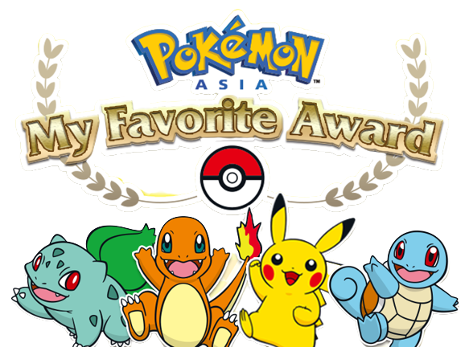
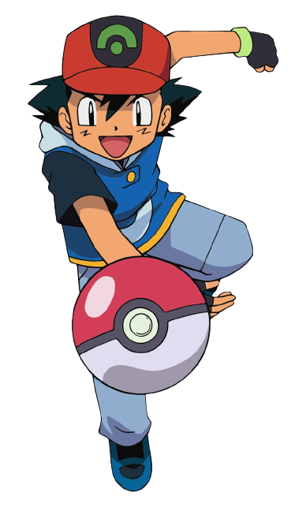
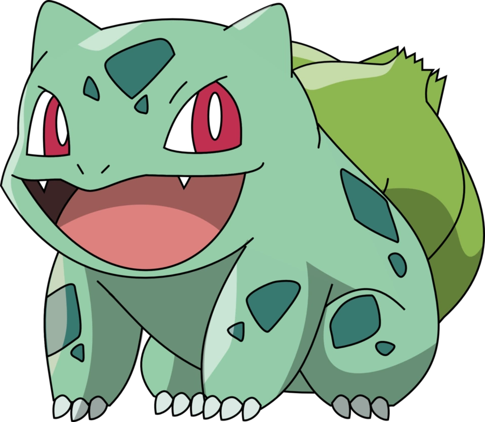
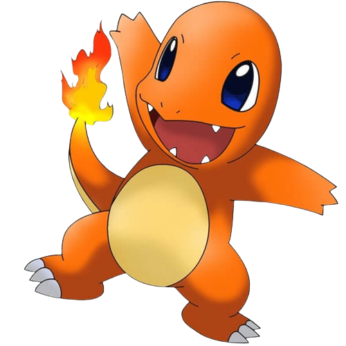
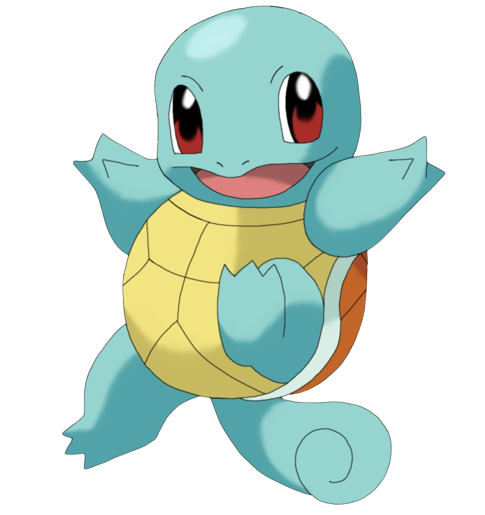
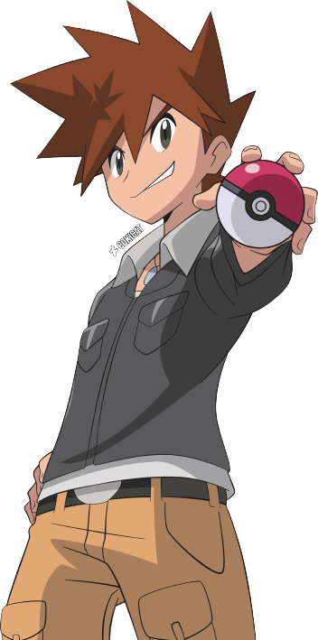

Pokémon (Japanese: ポケモン, Hepburn: Pokémon), abbreviated from the Japanese title of Pocket Monsters (ポケットモンスター, Poketto Monsutā) and currently branded in English as Pokémon the Series (テレビアニメ「ポケットモンスター」シリーズ, Terebi Anime 'Poketto Monsutā' Shirīzu, TV Anime "Pocket Monsters" Series), is a Japanese anime television series, part of The Pokémon Company's Pokémon media franchise, which began broadcast in Japan on TV Tokyo in April 1997.
Ash Ketchum, known as Satoshi (サトシ) in Japan, is a fictional character in the Pokémon franchise owned by Nintendo. He is the protagonist of the Pokémon anime and certain manga series as well as on various merchandise related to the franchise. In Japanese, the character is voiced by Rika Matsumoto, and Hana Takeda.
Pikachu (Japanese: ピカチュウ Pikachu) is an Electric-type Pokémon introduced in Generation I. It evolves from Pichu when leveled up with high friendship and evolves into Raichu when exposed to a Thunder Stone. In Alola, Pikachu will evolve into Alolan Raichu when exposed to a Thunder Stone. Pikachu has a Gigantamax form. Pikachu with the Gigantamax Factor cannot evolve. In Pokémon Yellow, the starter Pikachu will refuse to evolve into Raichu unless it is traded and evolved on another save file. In Pokémon: Let's Go, Pikachu!, the player's starter Pikachu also will not evolve, but cannot be traded to become a Raichu. Pikachu is popularly known as the mascot of the Pokémon franchise and one of Nintendo's major mascots. It is also the game mascot and starter Pokémon of Pokémon Yellow and Let's Go, Pikachu!. It has made numerous appearances on the boxes of spin-off titles. Pikachu is also the starter Pokémon in Pokémon Rumble Blast and Pokémon Rumble World.

Bulbasaur is a Grass/Poison-type Pokémon species in Nintendo and Game Freak's Pokémon franchise. It is the first in the franchise's monster index, called a Pokédex. Designed by Atsuko Nishida, Bulbasaur debuted in Pocket Monsters: Red and Green as a starter Pokémon.
Charmander is one of three 'starter' Pokémon that can be selected at the beginning of Pokémon Red and Blue, and their remakes, Pokémon FireRed and LeafGreen. In the anime, Ash acquires a Charmander early in the series, and it became one of his most used Pokémon. In the Pokémon Adventures manga, Blue receives a Charmander from his grandfather Professor Oak. Since it appeared in the Pokémon series, Charmander has received generally positive reception.
Squirtle, known as Zenigame in Japan, is a Pokémon species in Nintendo and Game Freak's Pokémon franchise. It was designed by Atsuko Nishida. Its name was changed from Zenigame to Squirtle during the English localization of the series in order to give it a "clever and descriptive name."
The day Gary started out on his Pokémon journey, he came off as an arrogant and egotistical Trainer. His chosen starter Pokémon was Squirtle, which was actually the same Pokémon that Ash originally wanted to start with, and he even had a group of cheerleaders who cheered him on in all of his battles, and they would go so far as crying whenever he lost
